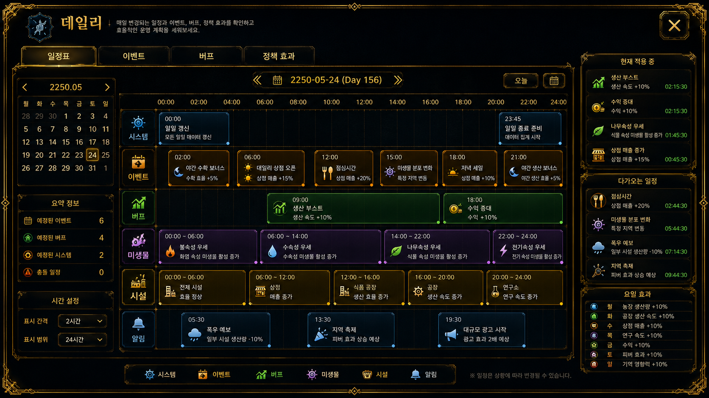
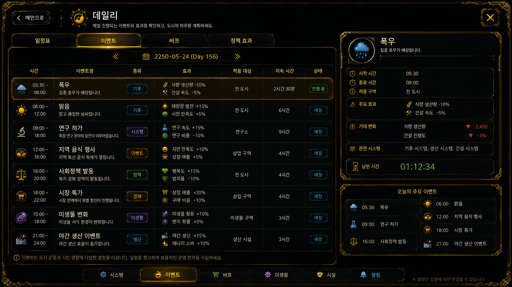
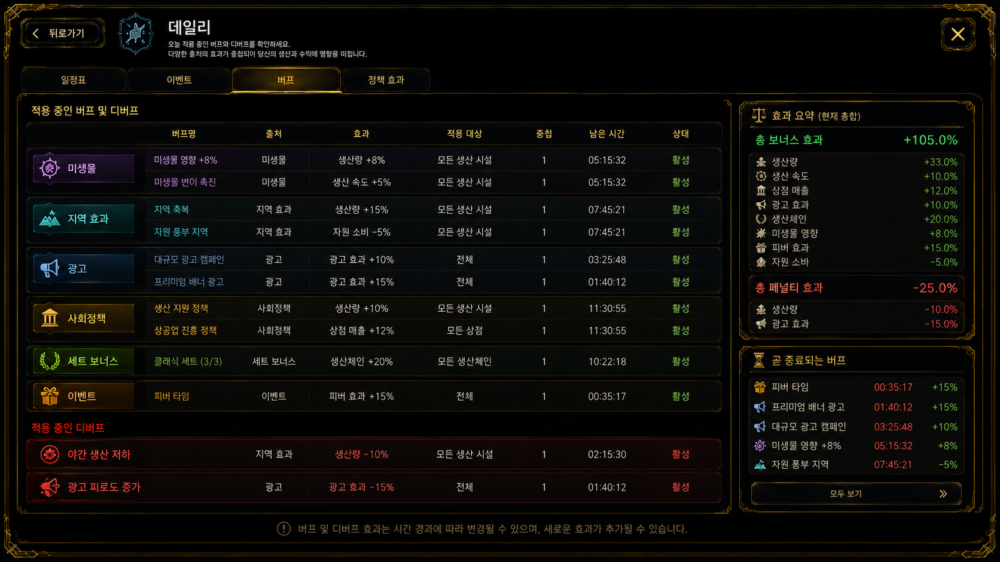

Sub System
데일리
진입 경로
홈
→ 서브 시스템
→ 데일리데일리 시스템에서는 하루 동안 발생하는 일정, 이벤트, 버프와 디버프 효과를 시간표와 카드 형태로 확인한다.
기본 구성
데일리 화면은 일일 일정표, 이벤트, 버프와 디버프의 세 영역으로 구성된다.
일일 일정표
이벤트
버프 / 디버프하루가 시작되면 시간대별 일정과 현재 적용 중인 효과가 표시되며, 시간이 흐르면서 예정된 이벤트와 효과가 순서대로 적용된다.

일일 일정표
하루 24시간 동안 어떤 일정과 효과가 적용되는지 달력형 또는 시간표형으로 확인한다.
표시 정보
- 현재 날짜와 시간
- 시간대별 일정
- 적용 예정 이벤트
- 적용 예정 버프와 디버프
- 일정별 적용 대상
하루 시작
→ 시간표 생성
→ 시간대별 일정 표시
→ 현재 시간에 맞춰 효과 적용생산, 판매, 연구, 축제, 지역 이벤트 같은 하루 단위 일정을 한눈에 볼 수 있다.

이벤트
현재 발생 중이거나 예정된 이벤트를 확인한다.
표시 정보
- 이벤트 이름과 종류
- 시작 시간과 종료 시간
- 적용 대상과 효과 내용
- 남은 시간
아침 생산 이벤트
점심 지역 축제
저녁 시장 붐
야간 연구 부스트이벤트는 시간대별로 자동 적용되며 생산량, 판매량, 방문자 수, 연구 속도, 미생물 활성 등에 영향을 줄 수 있다.

버프 / 디버프
현재 하루 동안 적용 중인 강화 효과와 약화 효과를 확인한다.
표시 정보
- 효과 이름과 버프 또는 디버프 구분
- 효과 수치와 적용 대상
- 남은 지속 시간
- 중첩 여부
생산량 +20%
상품 선호도 +15%
광고효과 +10%
생산속도 -5%
자원 소모량 +8%버프와 디버프는 이벤트, 미생물, 사회정책, 날씨, 지역 상태에 따라 함께 적용될 수 있다.
정보 갱신
현재 시간이 변하거나 새로운 이벤트가 시작될 때 데일리 정보가 자동으로 갱신된다.
시간 경과
또는 이벤트 시작 / 종료
→ 적용 효과 재계산
→ 데일리 정보 갱신전체 흐름
데일리 진입
→ 오늘 일정 확인
→ 이벤트 확인
→ 버프 / 디버프 확인
→ 시간 경과에 따라 효과 변화
→ 생산과 판매 결과에 반영메뉴 설명
하루 동안 발생하는 일정, 이벤트, 버프와 디버프를 확인한다. 시간표에 따라 어떤 효과가 언제 적용되는지 보고 생산, 판매, 연구 흐름을 관리할 수 있다.